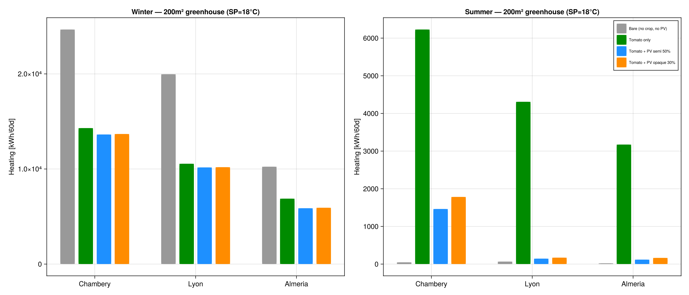
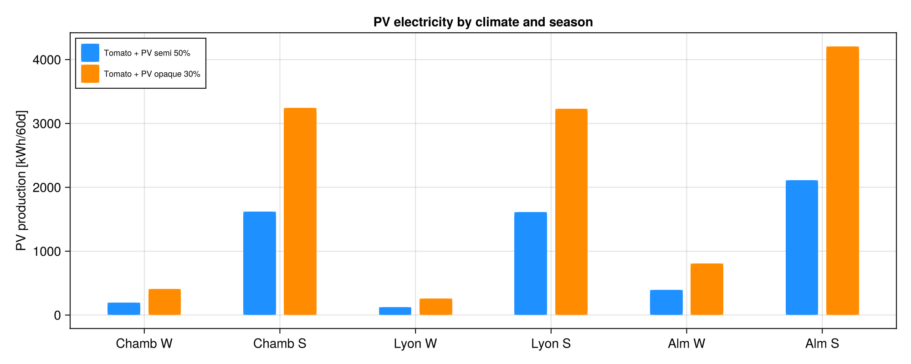

Tutorial: Multi-Climate Comparison
GreenhousesJL can read EPW weather files and simulate the same greenhouse across different climates to quantify the effect of location on heating, PV production, and crop performance.
Loading EPW files
epw = load_epw("path/to/weather.epw")
epw_summary(epw) # print location, T range, solar resource
# Extract a 60-day period (e.g. winter: December)
tmy_winter = epw_to_tmy(epw; start_month=12, n_days=60)
# Or summer (July)
tmy_summer = epw_to_tmy(epw; start_month=7, n_days=60)
# Use in simulation
p = GreenhouseParams(tmy_winter; A=200, ...)Climates tested
| City | Climate | T_mean | I_glob | Direct/Diffuse |
|---|---|---|---|---|
| Chambery | Continental cold | 10.7°C | 1347 kWh/m²/yr | 75% direct |
| Lyon | Continental temperate | 11.9°C | 1203 kWh/m²/yr | 56% direct |
| Almeria | Mediterranean | 19.0°C | 1930 kWh/m²/yr | 84% direct |
Results: 200m² greenhouse, 60-day periods
Winter heating (Dec-Jan)

| Climate | Bare | +Tomato | +Tomato+PV | Saving |
|---|---|---|---|---|
| Chambery (2°C) | 24676 kWh | 14313 | 13280 | 46% |
| Lyon (4°C) | 19959 | 10555 | 9929 | 50% |
| Almeria (13°C) | 10240 | 6886 | 5119 | 50% |
PV production by climate and season

| Climate | PV Winter | PV Summer | Summer/Winter ratio |
|---|---|---|---|
| Chambery | 406 kWh | 3244 kWh | 8× |
| Lyon | 263 | 3228 | 12× |
| Almeria | 806 | 4210 | 5× |
Key findings
- Crops reduce heating by 42-49% regardless of climate (canopy thermal buffer)
- PV panels produce 5-12× more in summer than winter
- Almeria benefits most from PV: net energy balance negative (PV surplus) in summer
- Summer paradox: crops increase heating demand (transpiration cools air below setpoint), PV panels reduce this effect by limiting PAR and thus transpiration
- Direct vs diffuse ratio matters: Almeria (84% direct) → strong shadow patterns under PV → stomatal dynamics more important than in Lyon (56% direct)